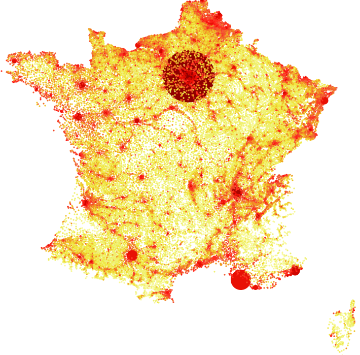
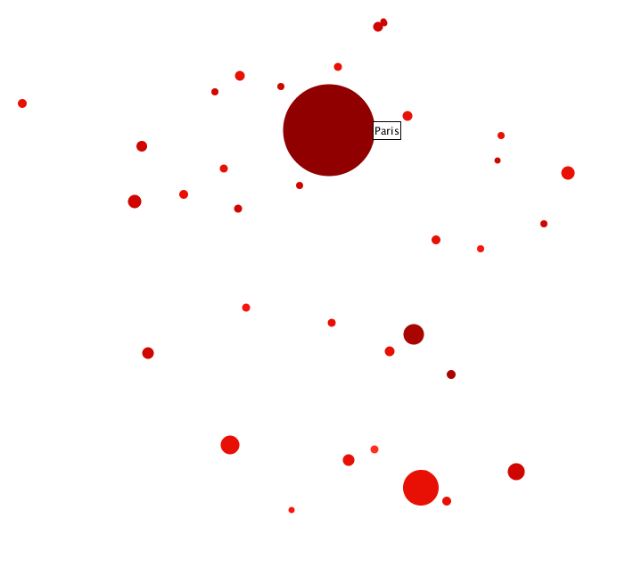
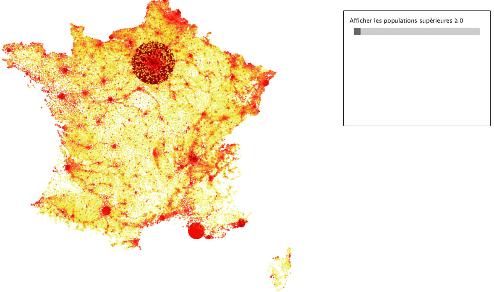
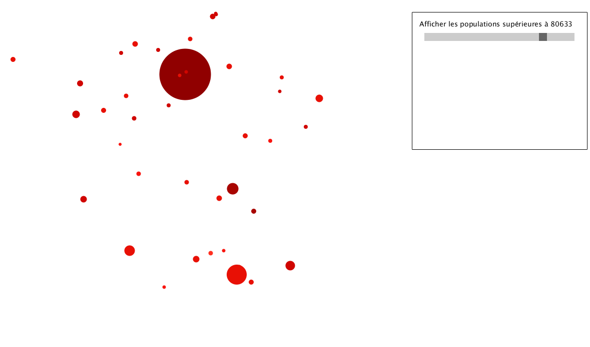
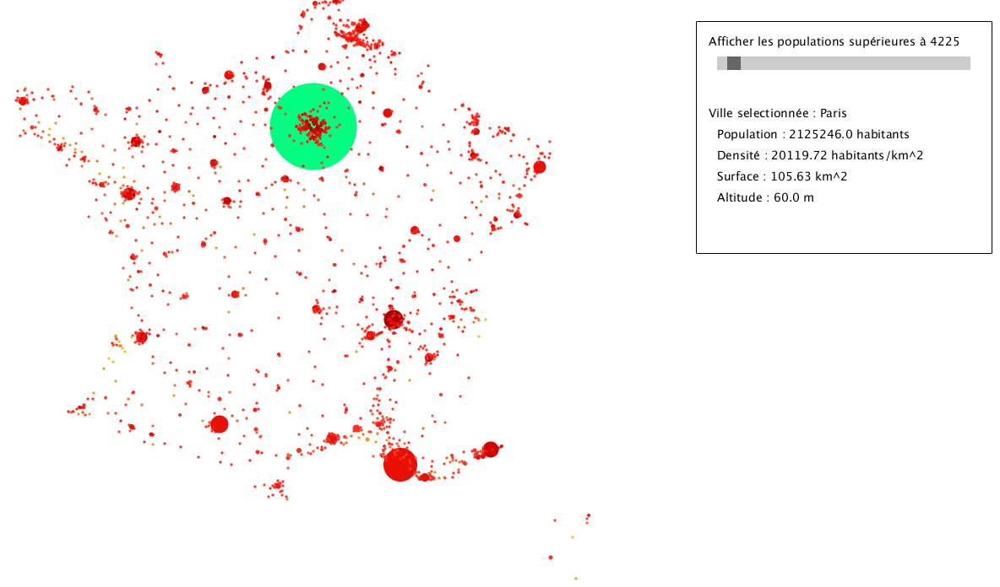

NIHM - TP carte de France avec Processing
Durant ce tp, nous avons utilisé les données fournies ici pour réaliser une carte intéractive de la France. Sur cette carte, nous avons dû représenter les villes grâce à deux de leurs attributs.
Représentation des données
Pour ce TP, J'ai décidé d'utiliser la densité de population, ainsi que le nombre d'habitant pour représenter chaque ville. Je me suis inspiré de la carte disponible ici. Sur ma carte, les villes sont représentées par des cercles, de tailles et de couleurs différentes, positionnés à leur coordonnées géométrique.
La taille des cercles varie en fonction du nombres d'habitants d'une ville. Cela semble une bonne manière de représenter une donnée de type quantitative. La taille d'un cercle est au minimum de 3 pixels afin de pouvoir voir les villes ayant le plus faible nombres d'habitants. Ensuite, elle augmente proportionnellement au nombre d'habitant, allant au maximum jusque 103 pixels.
J'ai utilisé le site suivant, indiqué dans l'énoncé du TP, pour trouver des palettes de couleurs efficaces. J'ai choisi de faire varier la couleur en fonction de la densité de population, du jaune pour les plus faibles, au rouge pour les plus fortes.
Nous obtenons ainsi la carte de France suivante :
Cela nous donne une carte lisible et agréable à l'oeil où l'on identifie clairement les zones ayant une forte densité de population et celles en ayant une plus faible.
Interaction utilisateur
Plusieurs interactions utilisateur ont été implémentées durant ce TP. La première consiste à afficher le nom de la ville quand l'utilisateur passe sa souris sur celle-ci. Nous pouvons voir un exemple de cette interaction dans l'image ci-dessous où le pointeur de la souris est sur la ville de Paris.
Nous pouvons également modifier le nombre de villes affichées sur la carte. Pour cela, un slider, situé à droite de la carte, permet de les filtrer en fonction de leur nombre total d'habitants. On peut voir le nombre minimum d'habitants sur une zone de texte située au dessus du slider. Nous pouvons voir ce slider à l'oeuvre sur les 2 images ci-dessous où le curseur du slider a été déplacé.
|  |  |
Une seconde interaction concerne les villes. Si l'utilisateur clique sur une ville, ses informations sont affichées dans une zone à droite de l'image, sous le slider vu précedemment. La ville est quant à elle affichée en vert. Si l'utilisateur veut enlever ces informations, il n'a qu'à cliquer sur une zone où il n'y a pas de villes. Voici un exemple dans lequel la ville de Paris a été sélectionnée. On peut voir les informations sur la population, la surface ou l'altitude de Paris affichées à droite de la carte.
Instructions
Pour utiliser cette application, il suffit de télécharger l'archive ici et de la décompresser. Il suffit alors de lancer l'application processing, d'ouvrir le fichier tpdensite.pde et d'appuyer sur la flèche pour lancer l'application.
Source
carte : http://www.cartesfrance.fr/geographie/cartes-population/carte-densite-population-2009.html
couleur : http://colorbrewer2.org/
slider : https://processing.org/examples/scrollbar.html
données : http://www.cs.toronto.edu/~fchevali/fanny/masterIVI/villes.tsv